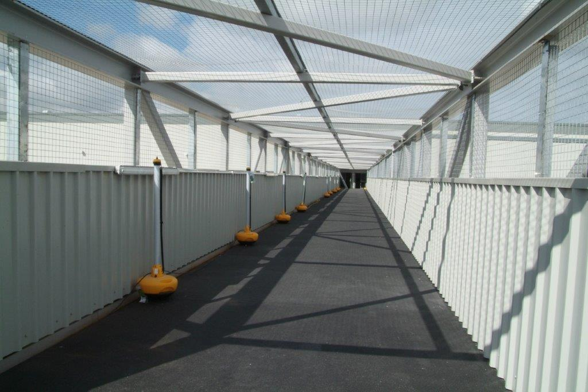

Our Anti-Slip sheets are to be used for external or industrial flooring areas that are subject to heavy usage or movement and can be glued and screwed over a slippery surface.
Anti-slip GRP flooring sheets provide a cost-effective anti slip solution to improving safety in potentially hazardous areas such as steps, platforms, ramps and walkways. SureGRP products are manufactured in the UK from hard wearing durable GRP (Glass Reinforced Plastic – Fibreglass) ensuring quality is high and products are reliable.
Our non slip flooring sheets can be manufactured in a range of colours, thicknesses and sizes dependent on your requirements.
Installation service available.
Fast Installation
Economical
Anti-Slip Surface
Improved Appearance
Access ramps & platforms
Decking & landing areas
Bridges & underpasses
Oil rigs & rail industries (Network Rail Approved Supplier)
Any size of anti slip sheets can be manufactured on request.
Thicknesses available: 3mm, 4mm, 6mm, 8mm, 10mm
Do you have a project you want to discuss with us? We have supplied & installed many stair tread covers nationwide across a variety of industries (Rail, Stadia & Construction).
Contact us today by calling 01952 327577 or email us. We will be happy to help!